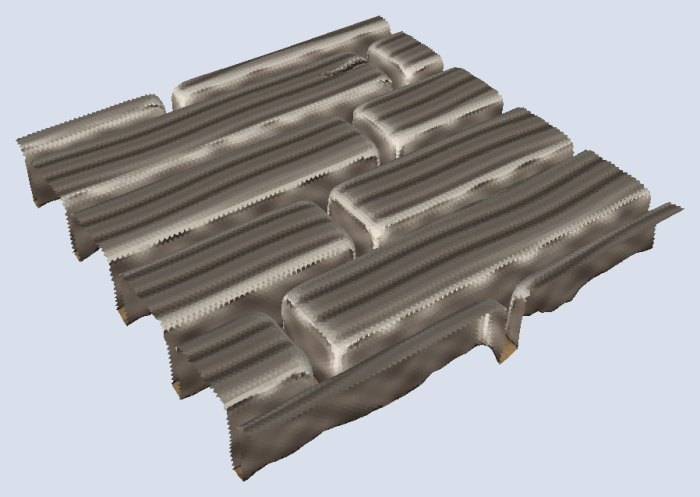

Writing it
tile size="1x1" seed=73 {
stack {
base
dirt
planks style=random texture=worn boards=8 seed=24
}
}Boards run east to west, boards across a square. style=even cuts every board half a square long, each course set half a board on.

Reference
Kind
a surface: it paints the ground of its area
Place
at= regionBuilt
yes
Controls
| Control | Takes | Default | What it does |
|---|---|---|---|
style | word | random | how the boards are cut
|
texture | word | worn | the wood's finish
|
boards | count, 2 to 16 | 8 | boards across one square |
In the library
1x1-floor-planks.dtilelib:tiles/floors/1x1-floor-planks.dtile
Generated from dharmatiles elements planks by cargo xtask docs.
Rules
What this element always does. A change to one of these is a change to the element.
- A floor is a pieces body of the stack:
top=says how high it may be, as a band (a height, or a range[low .. high]),pinlines hold the band to a height at a place, andat=names the region it fills. It starts with the topfloorHeightand a pin atedgesatfloorEdgeHeight, flush with the edge. A floor's pins step: nothing eases between a pin and the band beside it. See pin, let and heights. - Each piece is made to fit the band as it is made: its height and tilt are drawn from a heaved surface inside the band, then held inside the band over every node it stands on, and the finished piece is checked against the band. Nothing is trimmed afterwards. A single height is a flat floor, a wide band a heaved one.
- A piece that misses its band is a bug the build refuses (
dt::band). Where a pin's edge falls inside one piece the band jumps across it and the build is refused: put the pin's edge on the edge of a piece. - The grain is the piece's own and never rises above the band's top: the highest of it reaches the band, and the rest lies under it.
- Its pieces stand on what is below: they reach down to the lowest land under the floor, or to zero, the base, where there is none. The floor's surface is the higher of what is below and its own top, inside its region.
- A floor meets the tile edge flush at
floorEdgeHeight, 7.4 mm, with no edge-round, so two floor tiles meet with no step. Its faces at the plane keep the material’s grain and never pass it: a cut-stone slab or a board stands a hair past the plane (0.05 to 0.1 mm) and is cut there, so its top edge is square and the chipped relief of its face lies at or just behind the plane; a drystone flag’s upper flank is drawn to the plane, its pillow shape kept inside. At least 15% of each face is within 0.1 mm of the plane, so neighbours touch. A board’s end grain and edge grain are cut back behind the plane in the wood’s own pattern. - The grain is made along each board’s length and laid out on the board, so a tilted board’s grain is not distorted; checks run in from an end. Both are cut into the top and never rise above it.
Notes
Planks are wood: they paint in the wood colour of the 3MF. A wall stands on them as on flagstones. Dirt laid on a floor lies on it like on any surface: see dirt.